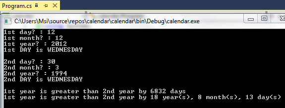

<h1 style="padding-left:4%;padding-top: 2%;padding-bottom: 2%;padding-right: 10%;border-bottom: 1px solid #BDBDBD;">


Age Counter Using C#


</h1>


A C# based program


<h2><a href="https://drive.google.com/open?id=1CAEXc8r-_OMLLpbC97mZK6jNF_zU31WJ" target="_blank"> Process </a></h2>



